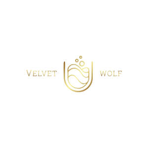

Trade Mark Journal No.2026/005 30 January 2026
UK00004274950 8 October 2025 (21,25,30,35,42,43,45)

- Class 21
- Cups and mugs; Coffee cups; Tea cups; Sippy cups; Plastic cups; Compostable cups; Glass cups; Drinking cups; Cardboard cups; Liqueur cups; Egg cups; Cups (Egg -); Biodegradable cups; Paper cups; Fruit cups; Cups (Fruit -); Cup lids; Mixing cups; Sake cups; Feeding cups; Demitasse sets comprised of cups and saucers; Silicone baking cups; Cups of paper or plastic; Paper baking cups; Cupcake baking cups; Cups made of earthenware; Cups made of china; Cup holders; Cups made of pottery; Cups made of plastics; Cups of precious metal; Biodegradable paper pulp-based cups; Double wall cups; Coffee mugs; Insulating sleeve holder for beverage cups; Drinking cups [not of precious metal]; Mugs; Cups, not of precious metal; Prize cups of porcelain, ceramic, earthenware, terra-cotta or glass; Coffee pots; Coffee scoops; Articles for the care of clothing and footwear.
- Class 25
- Gloves for apparel; Jerseys [clothing]; Clothing; Ready-to-wear clothing; Embroidered clothing.
- Class 30
- Powdered coffee in drip bags; Coffee bags; Tea bags; Coffee beverages with milk; Coffee; Coffee drinks; Cappuccino; Coffee based drinks; Iced coffee; Chocolate coffee; Coffee beverages; Coffee pods; Flavoured coffee; Beverages with coffee base; Beverages with a coffee base; Instant coffee; Viennese pastries; Coffee substitutes [artificial coffee or vegetable preparations for use as coffee]; Coffee beans; Coffee capsules; Decaffeinated coffee; Bakery goods; Danish pastries; Coffee extracts for use as substitutes for coffee; Coffee based beverages; Ground coffee; Malt coffee; Coffee flavourings.
- Class 35
- Retail services in relation to cups and drinking glasses; Wholesale services in relation to cups and glasses; Retail services in relation to cups and glasses; Wholesale services relating to cups and glasses; Retail services connected with the sale of clothing and clothing accessories; Retail services in relation to clothing accessories; Retail store services in the field of clothing; Business assistance relating to starting and running a franchise; Provision of assistance [business] in the establishment of franchises; Administration of the business affairs of franchises; Assistance in business management within the framework of a franchise contract; Business assistance relating to the establishment of franchises; Provision of assistance [business] in the operation of franchises; Advice in the running of establishments as franchises; Assistance in product commercialization, within the framework of a franchise contract; Advisory services (Business -) relating to the establishment of franchises; Providing assistance in the field of business management within the framework of a franchise contract; Business advisory services relating to the establishment and operation of franchises; Advisory services (Business -) relating to the operation of franchises; Providing assistance in the field of product commercialization within the framework of a franchise contract; Advisory services relating to the operation of franchises; Business advice relating to restaurant franchising; Assistance in franchised commercial business management; Business management assistance in the field of franchising; Business advertising services relating to franchising; Business management for a trade company and for a service company; Business assistance relating to franchising; Retail services in relation to coffee; Online ordering services in the field of restaurant take-out and delivery.
- Class 42
- Internet café services (computer rental).
- Class 43
- Fast-food restaurant services; Cafe services; Café services; Cafés; Coffee shops; Coffee shop services; Serving food and drink in Internet cafes; Bar and restaurant services; Restaurant and bar services; Providing food and drink in Internet cafes; Bistro services; Take-away restaurant services; Salad bars [restaurant services]; Coffee bar services; Self-service restaurant services; Take-out restaurant services; Restaurants (Self-service -); Self-service restaurants; Mobile restaurant services; Serving food and drink in restaurants and bars; Brasserie services; Catering in fast-food cafeterias; Providing food and drink in bistros.
- Class 45
- Licensing of franchise concepts.
LOYID SHAAN D SOUZA
Representative: SHIRISH PATEL